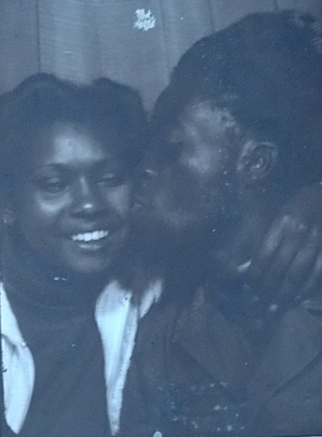
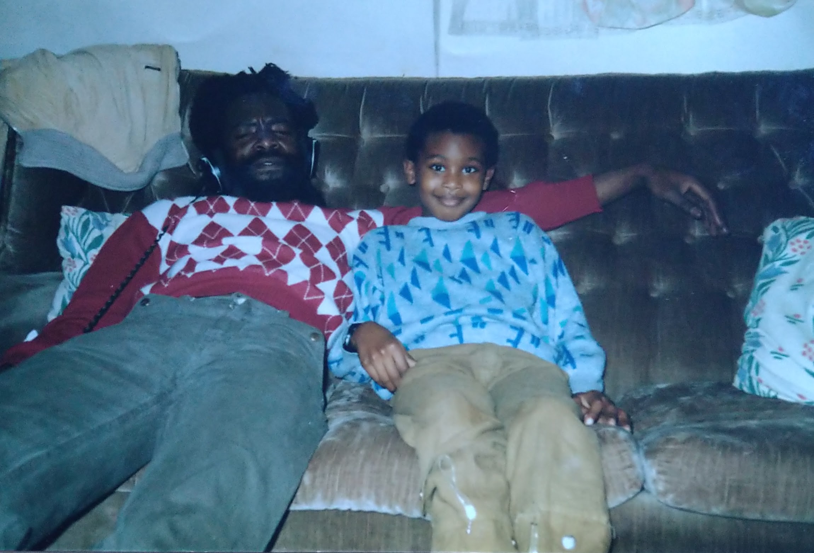
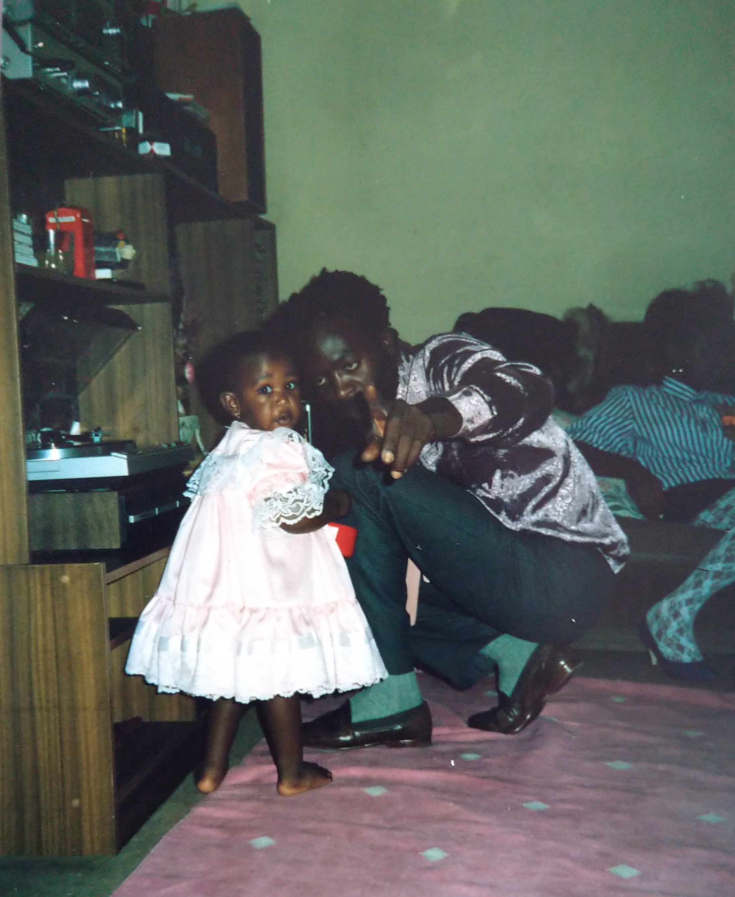

A journey of love, strength, and faith — from Dominica to London and beyond.
Early Years
Born on 13 April 1936 in Dominica, Kent Germain grew up surrounded by the lush hills and rivers that shaped his spirit.
His childhood was marked by curiosity, laughter, and a deep respect for nature — qualities that stayed with him throughout his life.

Young Kent — a quiet strength already visible in his eyes.
Roots and Journey
In his youth, Kent carried the rhythm of the Caribbean wherever he went.
Moving to London, he built a life grounded in community and purpose — working hard, raising family, and keeping his connection to Dominica alive through music, food, and faith.
“Jah is my light and salvation, whom shall I fear?” — Psalm 27:1

London days — Kent’s pride and joy, always with a smile and a story.
Faith and Family
Kent’s life was a testament to faith and family. His Rastafarian beliefs guided his words and actions — peace, love, and respect for all.
He was a father, brother, uncle, and friend whose wisdom and humour touched everyone he met.
Whether drumming with Wailers F.C., sharing stories at gatherings, or tending to the land back home, Kent embodied strength and serenity.
His laughter carried through generations, his lessons remain in the hearts of those he loved.

Family and friends — the heartbeat of Kent’s world.
Legacy
Kent’s journey came full circle on 10 September 2024.
His spirit returned to Zion, leaving behind a legacy of kindness, courage, and unwavering faith.
His memory lives on in every drumbeat, every smile, and every act of love shared in his name.
By the river and falls — where his story began and where his spirit feels at home.